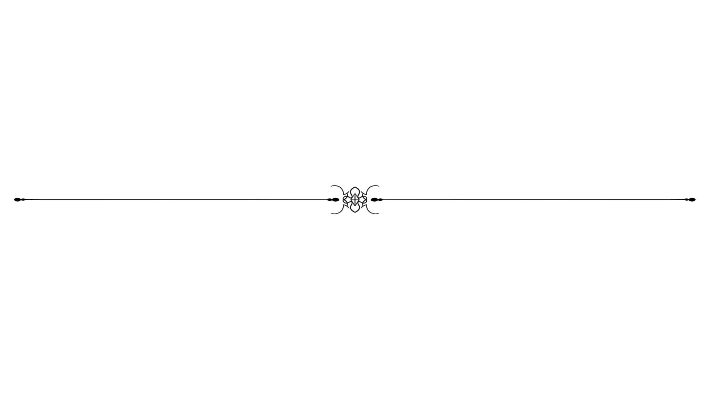

ola@grandesite.com.br
Telefone: (12) 3456 - 7890
Rua Alegre, 123 - Cidade Brasileira, Estado, País
Vasta experiência com cozinha industrial, 8 anos como cozinheira
chefe, experiência com cozinha de mais de 7 países.
Experiência com a cozinha italiana, francesa,espanhola, africana,
chinesa, portuguesa e russa.